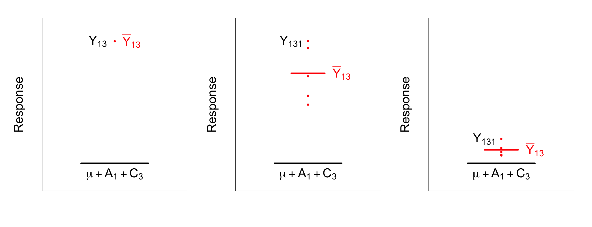
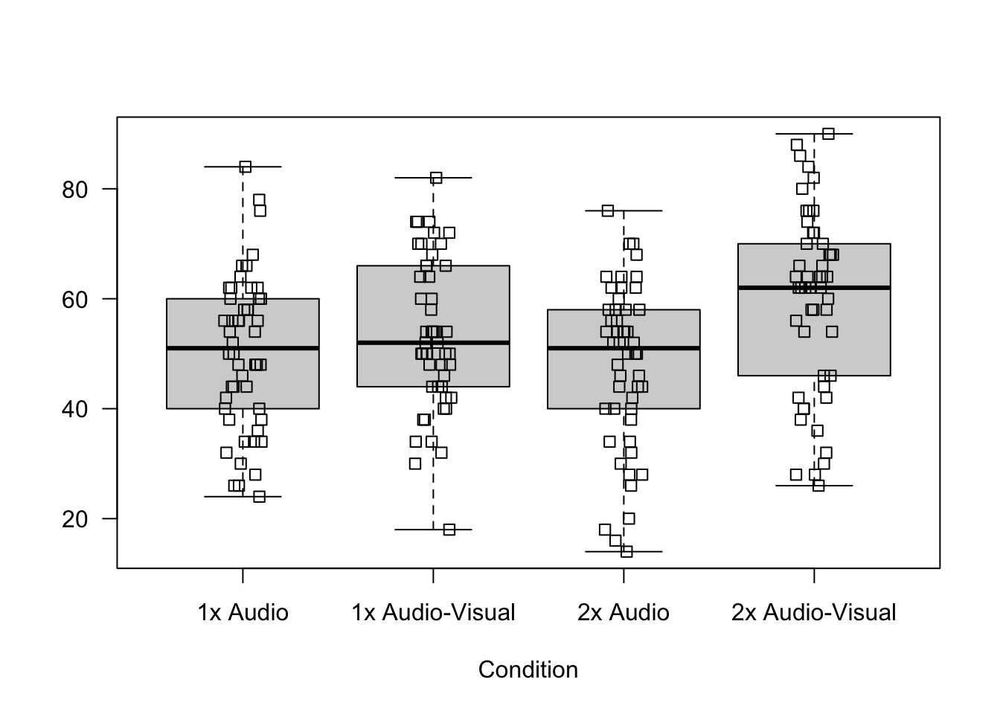
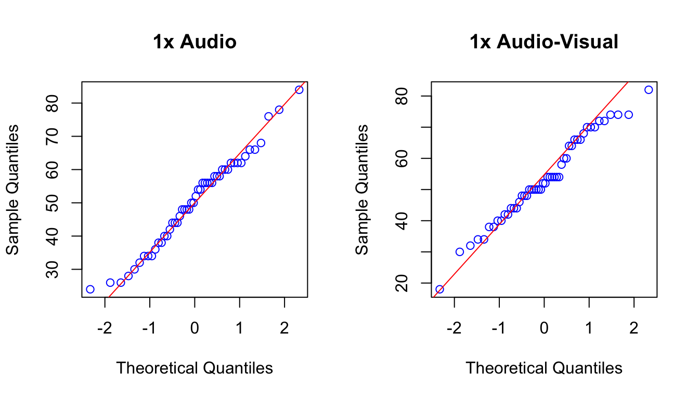
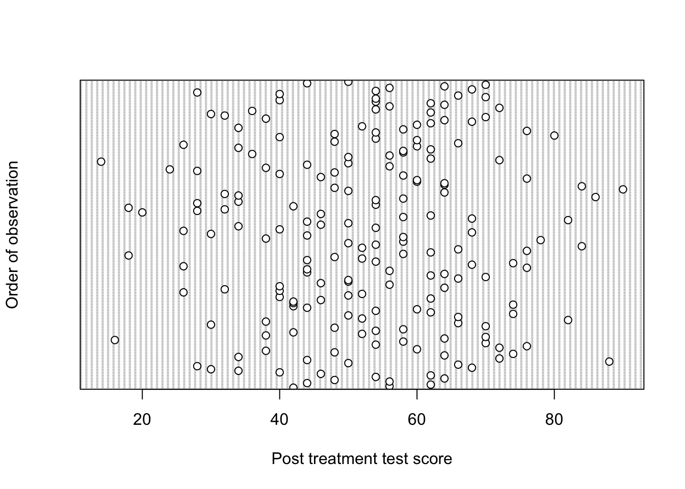

15 Model for Factorial Experiments
Assuming we have a continuous response variable for which we assume a normal distribution, no blocking factors and a factorial experiment with two treatment factors, the following model is plausible:
\[ Y_{ijk} = \mu + A_i + C_j + (AC)_{ij} + e_{ijk} \]
where \(Y_{ijk}\) is the \(k^{th}\) observation on the \((ij)^{th}\) treatment combination and
\[ \begin{aligned} Y_{ij} &= \text{observation on treatment } i \text{ in block } j \\ \mu &= \text{general/overall mean} \\ A_i &= \text{main effect of the } i^{th} \text{ level of A} \\ A_i &= \text{main effect of the } j^{th} \text{ level of C} \\ (AC)_{ij} &= \text{interaction between the }i^{th}\text{ level of A and the }j^{th}\text{ level of C.} \\ e_{ijk} &= \text{random error with } e_{ijk} \sim N(0, \sigma^2) \\ \end{aligned} \]
Note that (AC) is a single symbol and does not mean the interpaction is the product of the two main effects.
\(\mu + A_i + C_j + (AC)_{ij}\) is the structural part of the model which describes the mean or expected response with treatment \(ij\), i.e. at the \(i^{th}\) level of factor A and \(j^{th}\) level of factor C. Depending on the estimates for the main effects, each treatment will have a different estimated mean response. For every level of A there is a main effect, the \(A_i\)’s. For every level of factor B there is a main effect, \(B_i\). For every combination of A and B levels there is an interaction effect, \((AC)_{ij}\). So the model implies that each treatment mean is made up of an overall mean, two main effects and and interaction term.
15.1 Replication
Replication is crucial in any experiment! Without replication, we cannot estimate the experimental error variance (\(\sigma^2\)), which is essential for assessing variability and conducting hypothesis tests.
If we only have one observation per treatment, that observation becomes the treatment mean. Since we cannot compute deviations from the treatment mean, there is no estimate of error variance. This means that while we can technically estimate the model parameters, the model itself is practically useless—we cannot perform hypothesis tests without an estimate of error variance. And if we can’t test anything, what’s the point?
In factorial experiments, the situation gets even worse when we don’t replicate treatments. Specifically, we can’t calculate the interaction effect. In general, the interaction effect is calculated as the difference between the treatment mean and the sum of the main effects and the overall mean:
\[(AC)_{ij} = \bar{Y}_{ij} - (\mu + A_i + C_j) \]
Now consider the first plot in the series below. There is only one observation in the hypothetical treat \(i = 1\) and \(j = 3\). That means that the treatment mean \(\bar{Y}_{ij}\) is just the mean of this single observation. We can’t calculate any deviations from this mean with only one observation as we usually would for the error variance. We always need to calculate an error term and this is always calculated as the deviation of the observation to the next closest mean. With only one observation per treatment, the next closest mean to that observation is the sum of the main effects: \(\mu + A_i + B_j\). But wait, that means the error term is also the interaction term since the treatment mean and the observation are the same? Jup! Now you see the problem. With no replication, the error term and the interaction effect are confounded.
Have a look at the second plot. Now we have five observations within the treatment. We can calculate the 5 error terms:
\[r_{13k} = Y_{13k} - \bar{Y}_{13}\]
and we can calculate the interaction effect:
\[ (\hat{AB})_{13} = \bar{Y}_{13}- (\hat{\mu} + \hat{A}_1 + \hat{B}_3)\]
They are no longer the same thing, they are separable! The interaction effect for this treatment is quite big if you look at the difference visually. For the last plot, there are also five observations, but now the deviation of the treatment mean from the sum f the main effects is almost zero; it’s just due to random variation. The interaction effect is too small to detect statistically.
15.2 Parameter estimation
The maximum likelihood/least squares estimates are found by minimizing the error or residual sum of squares:
\[ S = \sum_{ijk} (Y_{ijk} - \mu - \alpha_i - \beta_j - (\alpha\beta)_{ij})^2 \]
The solutions to these equations are the least squares estimates:
\[ \hat{\mu} = \bar{Y}_{...} \]
\[ \hat{A}_i = \bar{Y}_{i..} - \bar{Y}_{...}, \quad i = 1, \dots, a \]
\[ \hat{C}_j = \bar{Y}_{.j.} - \bar{Y}_{...}, \quad j = 1, \dots, c \]
\[ (\hat{AC})_{ij} = \bar{Y}_{ij.} - \bar{Y}_{i..} - \bar{Y}_{.j.} + \bar{Y}_{...}, \quad i = 1, \dots, a, \quad j = 1, \dots,c \]
The main effects are as before, except that now they refer to differences between row or column means ([Figure 6.3]) and the overall mean. The interaction effects are estimated as the differences between treatment means and the sum of the main effects.
15.3 Back to the example
Let’s fit this model to the data of the playback and lecture modality experiment. This time, we have access to the actual data collected! Let’s explore the data and check our assumptions. The assumptions are the same as in a one-way ANOVA. That is normality of errors, equal population variances, independent errors and no outliers.
As always we start by reading in our data, checking that it has been read in correctly and looking at some descriptive statistics.
data <- read.csv("Datasets/Exp2DataPlayback.csv")
head(data) Participant.ID Condition Speed Content.Type Accuracy
1 945445adf5 1x Audio-Visual 2 Audio-Visual 42
2 23afb88ef3 1x Audio 1 Audio-Only 56
3 1bc24e0480 1x Audio 1 Audio-Only 62
4 4fbdbd41a5 1x Audio 1 Audio-Only 44
5 442adf227a 1x Audio 1 Audio-Only 56
6 3ca9d09e2e 1x Audio-Visual 2 Audio-Visual 48The data set contains 5 columns:
Participant.ID– This column contains a unique identification code for each participant in the study.
Condition– Indicates the experimental condition or treatment, which includes both playback speed (1x or 2x) and content type (Audio-Only or Audio-Visual).
Speed– A numeric column that explicitly represents the playback speed, with1for normal speed (1x) and2for double speed (2x).
Content.Type– Specifies whether the participant received Audio-Only or Audio-Visual content.
Accuracy– The participant’s performance score, representing comprehension accuracy.
summary(data) Participant.ID Condition Speed Content.Type
Length:200 Length:200 Min. :1.0 Length:200
Class :character Class :character 1st Qu.:1.0 Class :character
Mode :character Mode :character Median :1.5 Mode :character
Mean :1.5
3rd Qu.:2.0
Max. :2.0
Accuracy
Min. :14.00
1st Qu.:42.00
Median :54.00
Mean :52.78
3rd Qu.:64.00
Max. :90.00 From the summary, you should notice a few things:
All the columns are read in as character values except
SpeedandAccuracy. We need the relevant columns to factors if we want to use them in our analysis.SpeedandAccuracyseem to be read in as numeric values. This makes sense forAccuracybut notSpeed!Speedis a categorical variable with levels 1x and 2x, we need to correct this.
data$Condition <- factor(data$Condition)
data$Content.Type <- factor(data$Content.Type)
data$Speed <- factor(data$Speed)
summary(data) Participant.ID Condition Speed Content.Type
Length:200 1x Audio :50 1:100 Audio-Only :100
Class :character 1x Audio-Visual:50 2:100 Audio-Visual:100
Mode :character 2x Audio :50
2x Audio-Visual:50
Accuracy
Min. :14.00
1st Qu.:42.00
Median :54.00
Mean :52.78
3rd Qu.:64.00
Max. :90.00 Great, now we can see that each treatment was replicated 50 times as we expected. To check our assumptions we start as always by plotting the response against treatments.
boxplot(Accuracy ~ Condition, data = data,
ylab = "", main = "", las = 1)
# we could also have specified the first argument as Accuracy ~ Content.Type * Speed
stripchart(Accuracy ~ Condition, data = data, vertical = TRUE, add = TRUE, method = "jitter")
There are no clear signs of deviation from normality, the box-plots look relatively symmetric. We could plot Q-Q plots for each treatment as well. Let’s do that for two of the treatments.
par(mfrow=c(1,2)) # splitting the plotting window into 1 row with 2 columns
qqnorm(data$Accuracy[data$Condition == "1x Audio"], pty = 4, col ="blue", main = "1x Audio")
qqline(data$Accuracy[data$Condition == "1x Audio"], col = "red")
qqnorm(data$Accuracy[data$Condition == "1x Audio-Visual"], pty = 4, col ="blue", main = "1x Audio-Visual")
qqline(data$Accuracy[data$Condition == "1x Audio-Visual"], col = "red")
No worrisome patterns! Next, the box-plots also suggest that there are no outliers and there are no clear indications that the assumption of equal population variance is not reasonable. Let’s have a look a the standard deviations.
sort(tapply(data$Accuracy, data$Condition, sd))1x Audio-Visual 1x Audio 2x Audio 2x Audio-Visual
13.71690 14.01084 14.93064 16.76386 The ratio of the smallest to largest is roughly 1.22 which is much smaller than five. Lastly, we need to check the assumption of independence. We start by assuming that the order in which the data are in the data set is the order in which the measurements were taken and we construct a Cleveland dot chart.
dotchart(data$Accuracy, ylab = "Order of observation", xlab ="Post treatment test score")
No clear patterns in the measurements, so no reason to suspect any dependence between successive measurements. The students were randomly assigned to each group and there are no other reasons to believe that independence was violated based on the description of the experiment.
With all the assumptions checked, we can move onto fitting the linear model to our data and inspecting the model estimates. Here is the model equation:
\[ \text{Accuracy}_{ijk} = \mu + \text{Speed}_i + \text{Content.Type}_j + \text{(Speed:Content.Type)}_{ij} + e_{ijk} \]
where,
\[ \begin{aligned} i &= 1,2\text{ and }j = 1,2\\ e_{ijk} &= \text{random error with } e_{ijk} \sim N(0, \sigma^2) \\ \end{aligned} \]
In R, we fit the model like this:
model <- aov(Accuracy ~ Speed + Content.Type + Speed:Content.Type, data = data)
model.tables(model, type = "means", se = TRUE)Tables of means
Grand mean
52.78
Speed
Speed
1 2
54.94 50.62
Content.Type
Content.Type
Audio-Only Audio-Visual
49.10 56.46
Speed:Content.Type
Content.Type
Speed Audio-Only Audio-Visual
1 50.32 59.56
2 47.88 53.36
Standard errors for differences of means
Speed Content.Type Speed:Content.Type
2.108 2.108 2.981
replic. 100 100 50R allows a convenient shorthand for this type of model. Instead of typing out all three terms, you can shorten the right hand side of the formula to Speed*Content.Type. The * operator indicates to R that we want main effects and interaction effects. Try it yourself to see that you get the same result.
We extract the treatment means as before. The grand mean is shown first. Now with a factorial treatment structure, we get the mean values for each level of the treatment factors included and the treatment means. In the output below, we see the means of the 1x and 2x speed followed by the means for the levels of content type. Lastly, the treatment means are presented in a 2 by 2 matrix format. The treatment “1x Audio Only” had a mean accuracy of 50.32, “2x Audio-Only” mean response is 47.8, and so on. And then lastly, the standard errors for differences between means.
We can also extract the estimated effects as before.
model.tables(model, type = "effects", se = TRUE)Tables of effects
Speed
Speed
1 2
2.16 -2.16
Content.Type
Content.Type
Audio-Only Audio-Visual
-3.68 3.68
Speed:Content.Type
Content.Type
Speed Audio-Only Audio-Visual
1 -0.94 0.94
2 0.94 -0.94
Standard errors of effects
Speed Content.Type Speed:Content.Type
1.490 1.490 2.108
replic. 100 100 50First we get the main effects for Speed and Content.Type. Then we get the interaction effects and standard errors. Let’s check that we understand how these interaction effects are calculated. Remember:
\[(AB)_{ij} = \bar{Y}_{ij} - (\mu + A_i + B_j) \]
So for treatment \(i = 1\) and \(j=1\), the equation becomes:
\[\hat{(AB)}_{11} = \bar{Y}_{11} - (\hat{\mu} + \hat{A}_1 + \hat{B}_1) \]
We go by the dimensions of the matrix returned by R, so then treatment \(i = 1\) and \(j=1\) is “1x Audio-Only”. Substituting the estimated values:
\[ \begin{aligned} (AB)_{11} &= 50.32 - (52.78 + 2.16 -3.68) \\ &= -0.94 \end{aligned} \]
Which is what R outputs as well. Now, we want to ask is there evidence for an interaction effect? To do this we need to construct the ANOVA table.